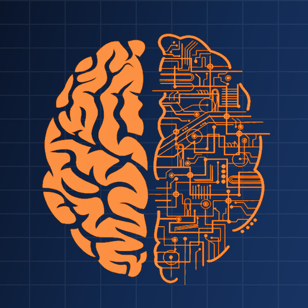
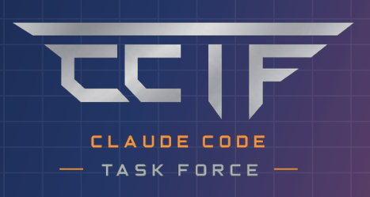

Where PL/I development meets AI.
Why we exist
We are a group of PL/I developers exploring what happens when decades of legacy PL/I expertise meets modern AI. Our mission: make PL/I development easier and faster for everyone. We build AI-driven tooling, powered by Claude Code, to accelerate development and automate the tedious work. We don't replace the developer, we strip out the boilerplate.
Our toolkit
Claude Code
One of the most capable AI models on the market.
CLI tools & MCPs
Command-line tools and MCP connectors acting as one central workspace.
Visual Studio Code
A free, scalable, AI-integrated modern development environment.
Tools by Claude Code
Custom tools, built with Claude Code, for everyday pain points.
What we do
PL/I Development Acceleration
AI-assisted development that speeds up the whole cycle, not just the typing.
Creating Tools
Custom tools for real problems: we target a concrete pain point and build the fix.
Automation
Repetitive work, solved. We pinpoint pain points and deliver automated resolutions.
Workshops
A hands-on series designed to put AI into everyone's hands.
Monthly workshops
1 · Claude Code install & setup
First CLI launch, project-level CLAUDE.md, settings basics.
2 · CLI tools
How to call our command-line tools from Claude and when to use which.
3 · Claude Code 101 & prompt engineering
October 2026.
4 · AI4PLI
November 2026.
How we grow
Training
4-day course on agentic AI application development: LLM fundamentals, RAG, ReAct and multi-agent systems, tracing and evaluation.
AI Summit 2026
New ideas, tools and contacts brought back to the community.
Hackathon 2026 · 3rd place
We entered as a team and finished third.